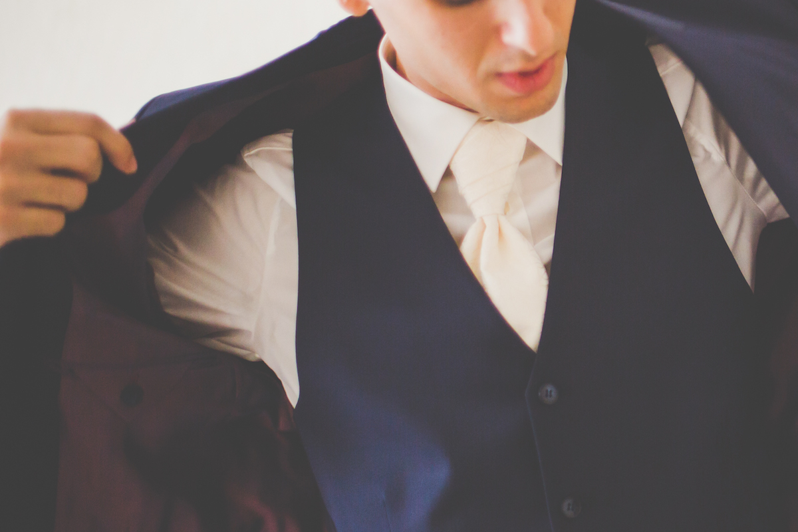
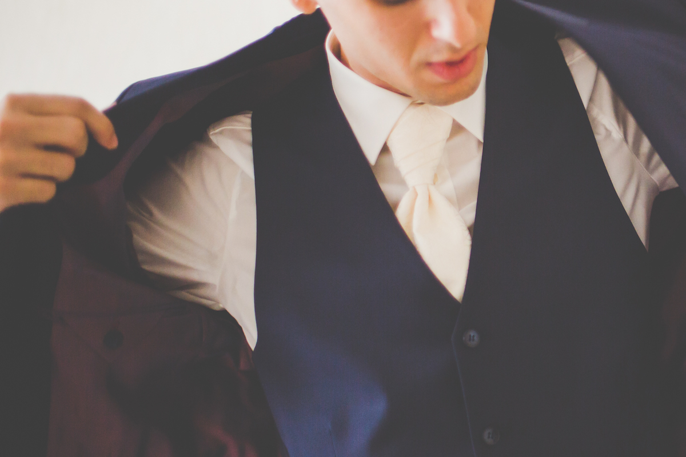
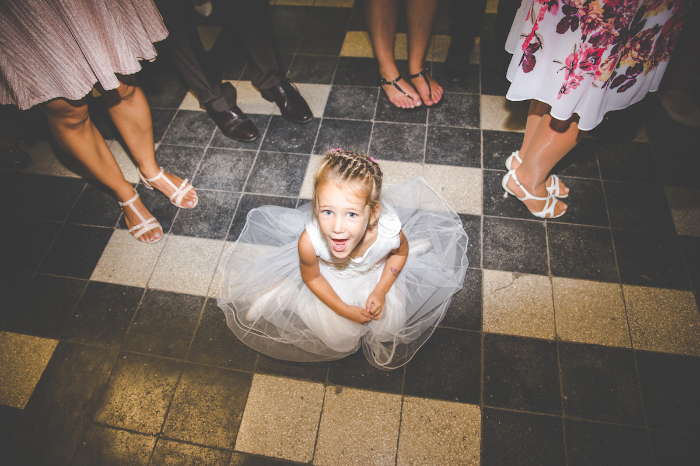
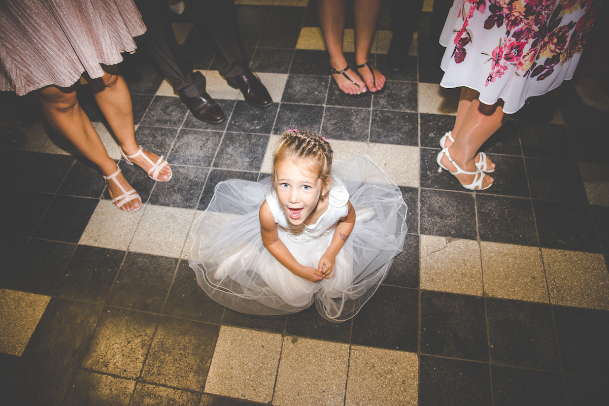

Készülõdés
Az esküvõ napja nem csak abban különleges, hogy délután egy ceremónián elkötelezzük magunkat a szerelmünk mellett, bizony ez a nap az ébredés pillanatától más mint a többi, a gyomrunk kicsit görcsbe szorul ugyanakkor mérhetettlen boldogásg és izgalom kerít hatalmába.
A készülõdés nem olyan mint a mindennapokban, pont ezért elengedthettlennek tartjuk, hogy ne legyen megörökítve.
 

Ceremónia
Ez az a rész a napon ami csak egyszer történik meg, minden más megismételhetõ... Gyûrûk felhúzása, az elsõ csók, az elsõ házas pillantások... Ezzel mi tisztában vagyunk, ezért több szögbõl, több eszközzel felszerekzeve dolgozunk a nap fénypontján mindeneshetõségre felkészülve.
A készülõdés nem olyan mint a mindennapokban, pont ezért elengedthettlennek tartjuk, hogy ne legyen megörökítve.

Ceremónia utáni csoportos fotózás
Võféjeket meghazuttoló profizmussal irányítjuk a lõdörgõ násznépet, ha nincs idõnk akkor nagyon gyorsan de akár félórán át is szórakoztatva kreatív csoport képeket készítünk.
Az este
Az este a nap legkiszámíthattlanabb része, a vendégek a finom vacsora és némi üdítõ elfogyasztása után felperzselik a táncparketett és bármelyik percben menyasszony rablással, tüzijátékkal, bakmenyasszonyokkal és még sokkal mással lephetnek meg titeket ezért mi mindig készen állunk.
 
